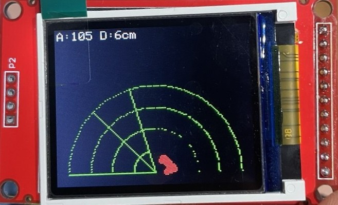

radar 초음파
Table of Contents
1. 프로젝트 개요
초음파 센서를 서보모터 위에 올려 좌우로 돌리면서 거리를 재고, 그 결과를 ST7735 화면에 “레이더 화면”처럼 그려주는 프로젝트다.
전체를 한 번에 만들면 어디서 고장 났는지 찾기 어렵다. 그래서 *큰 챕터마다 그 챕터만 따로 업로드해서 돌려보고 결과를 확인*할 수 있도록 만들었다. 각 챕터 코드는 그 자체로 완성된 스케치라서, 복사해서 바로 컴파일/업로드하면 된다.
진행 순서는 이렇다.
- Chapter 1 : 준비와 연결 점검 (화면이 켜지는지 확인)
- Chapter 2 : 부품 3개를 하나씩 따로 동작 확인
- Chapter 3 : 레이더 배경(반원 눈금판) 그리기
- Chapter 4 : 빔이 좌우로 움직이는 스캔 애니메이션
- Chapter 5 : 초음파로 장애물을 찾아 점과 거리로 표시 (완성)
- Chapter 6 : 다듬기 (값 안정화, 속도/전원 조정, 문제 해결)

1.1. 사용 부품
- 아두이노 Uno
- ST7735 1.8인치 TFT (128 x 160, SPI 방식)
- HC-SR04 초음파 센서
- SG90 서보모터
1.2. 핀 배선 (모든 챕터 공통)
SPI 통신선(11, 13번)을 디스플레이가 쓰기 때문에, 센서와 서보는 그 핀을 피해서 연결한다.
ST7735 디스플레이
| 모듈 핀 | 아두이노 Uno | 비고 |
|---|---|---|
| VCC | 5V 또는 3.3V | 모듈 사양 확인 |
| GND | GND | 둘 중 하나만 연결해도 됨 |
| CLK(SCK) | D13 | 하드웨어 SPI 고정 |
| SDA(MOSI) | D11 | 하드웨어 SPI 고정 |
| CS | D10 | |
| RS(DC) | D9 | |
| RST | D8 | 또는 RESET·3.3V에 묶고 생략 |
| BLK(LED) | 3.3V/5V 등 | 모듈에 따라 생략 가능 |
| NC | 연결 안 함 |
초음파·서보 (레이더용)
| 부품 | 부품 핀 | 아두이노 Uno |
|---|---|---|
| HC-SR04 | VCC | 5V |
| HC-SR04 | TRIG | D7 |
| HC-SR04 | ECHO | D6 |
| SG90 서보 | 신호선 | D5 |
| SG90 서보 | VCC | 5V |
| (공통) | GND | GND |
주의: Adafruit 라이브러리 버전에 따라 색상 상수가
ST77XX_BLACK또는ST7735_BLACK으로 다르다. 최신 버전 기준으로ST77XX_를 썼다. 화면이 안 켜지거나 색이 반대로 보이면initR(INITR_BLACKTAB)을INITR_GREENTAB이나INITR_REDTAB으로 바꿔본다.
2. Chapter 1 : 프로젝트 준비와 연결 점검
2.1. 1.1 이 챕터의 목표
ST7735는 이미 다룰 줄 안다고 했으니, 여기서는 앞으로 쓸 핀 배치대로 배선이 제대로 됐는지 만 확인한다. 화면에 제목과 “준비 완료” 글자가 뜨면 디스플레이 배선과 라이브러리 설정이 정상이라는 뜻이다. 가장 단순한 것부터 확인하는 게 원칙이다.
2.2. 1.2 필요한 라이브러리
아두이노 IDE의 “라이브러리 매니저”에서 두 개를 설치한다.
Adafruit GFX LibraryAdafruit ST7735 and ST7789 Library
2.3. 1.3 예제 코드 (독립 실행)
#include <Adafruit_GFX.h> // 도형/글자 그리기 공통 기능
#include <Adafruit_ST7735.h> // ST7735 전용 기능
#include <SPI.h> // SPI 통신
#define TFT_CS 10
#define TFT_RST 8
#define TFT_DC 9
Adafruit_ST7735 tft = Adafruit_ST7735(TFT_CS, TFT_DC, TFT_RST);
void setup() {
tft.initR(INITR_BLACKTAB); // 화면 초기화
tft.setRotation(1); // 가로 방향 -> 160(가로) x 128(세로)
tft.fillScreen(ST77XX_BLACK);
tft.setTextColor(ST77XX_GREEN);
tft.setTextSize(2);
tft.setCursor(20, 25);
tft.print("RADAR");
tft.setTextSize(1);
tft.setTextColor(ST77XX_WHITE);
tft.setCursor(20, 70);
tft.print("Display OK");
tft.setCursor(20, 85);
tft.print("Ready to start");
}
void loop() {
// 한 번만 그리면 되므로 반복할 내용 없음
}
결과 확인: 검은 화면에 초록색 “RADAR”, 흰색 “Display OK / Ready to start”가 보이면 성공. 안 보이면 배선(CS, DC, RST, MOSI, SCK)과 전원부터 다시 본다.
2.4. 1.4 주요 함수 설명
initR(옵션): 화면을 켜고 초기화. 옵션은 모듈 종류(탭 색)에 맞춘다.- 예:
tft.initR(INITR_BLACKTAB);
- 예:
setRotation(n): 화면 방향을 돌린다(0~3). 가로로 쓰려고 1을 넣었다.- 예:
tft.setRotation(1);→ 160 x 128
- 예:
fillScreen(색): 화면 전체를 한 색으로 칠한다.- 예:
tft.fillScreen(ST77XX_BLACK);
- 예:
setTextColor(색)/setTextSize(배율): 글자 색과 크기.- 예:
tft.setTextColor(ST77XX_GREEN); tft.setTextSize(2);
- 예:
setCursor(x, y): 글자 시작 위치(왼쪽 위가 0,0).- 예:
tft.setCursor(20, 25);
- 예:
print("글자"): 정한 위치/색/크기로 글자 출력.- 예:
tft.print("RADAR");
- 예:
3. Chapter 2 : 센서·모터 개별 동작 확인
부품 3개(초음파, 서보, 화면)를 하나씩 따로 돌려보고 정상인지 확인한다. 아래 2.1, 2.2, 2.3은 각각 독립 실행되는 별도 스케치다.
3.1. 2.1 초음파 거리 측정 (시리얼 모니터로 확인)
3.1.1. 원리
TRIG 핀으로 짧은 신호를 보내면 초음파가 발사되고, 물체에 맞고 돌아온 시간을 ECHO 핀이 받는다. 소리는 1초에 약 343m(= 0.0343 cm/마이크로초)를 가므로, 갔다 온 시간을 거리로 바꾼다. 왕복이니까 2로 나눈다.
3.1.2. 예제 코드 (독립 실행)
#define TRIG_PIN 7
#define ECHO_PIN 6
void setup() {
Serial.begin(9600);
pinMode(TRIG_PIN, OUTPUT);
pinMode(ECHO_PIN, INPUT);
}
float readDistance() {
digitalWrite(TRIG_PIN, LOW); delayMicroseconds(2);
digitalWrite(TRIG_PIN, HIGH); delayMicroseconds(10);
digitalWrite(TRIG_PIN, LOW);
long duration = pulseIn(ECHO_PIN, HIGH, 30000); // 30ms 타임아웃
float distance = duration * 0.0343 / 2.0; // 시간 -> 거리(cm)
return distance;
}
void loop() {
float d = readDistance();
Serial.print("Distance: "); Serial.print(d); Serial.println(" cm");
delay(200);
}
결과 확인: 시리얼 모니터(9600)를 열고 손을 멀리/가까이 움직이면 숫자가 따라 변하면 정상. 0만 나오면 TRIG/ECHO 배선을 확인한다.
3.1.3. 주요 함수 설명
pulseIn(핀, 상태, 타임아웃): 핀이 지정 상태로 있는 시간을 마이크로초로 잰다. 타임아웃 안에 신호가 없으면 0 반환.- 예:
long t = pulseIn(ECHO_PIN, HIGH, 30000);
- 예:
delayMicroseconds(us): 아주 짧은 시간(마이크로초) 멈춤.- 예:
delayMicroseconds(10);
- 예:
readDistance()(직접 만든 함수) : 인자 없음, 거리(cm)를 반환.- 예:
float d = readDistance();
- 예:
3.2. 2.2 서보모터 좌우 회전 (스윕)
3.2.1. 예제 코드 (독립 실행)
#include <Servo.h>
Servo myServo;
#define SERVO_PIN 5
void setup() {
myServo.attach(SERVO_PIN);
}
void loop() {
for (int angle = 0; angle <= 180; angle++) { myServo.write(angle); delay(15); }
for (int angle = 180; angle >= 0; angle--) { myServo.write(angle); delay(15); }
}
결과 확인: 서보가 좌우로 천천히 왕복하면 정상. delay 값을 줄이면 빨라지고
키우면 느려진다. 이 값이 곧 레이더 스캔 속도가 된다.
3.2.2. 주요 함수 설명
attach(핀): 서보를 어느 핀에 연결할지 지정.- 예:
myServo.attach(6);
- 예:
write(각도): 서보를 0~180도 중 원하는 각도로 돌림.- 예:
myServo.write(90);→ 가운데
- 예:
3.3. 2.3 디스플레이 도형 그리기 테스트
3.3.1. 예제 코드 (독립 실행)
#include <Adafruit_GFX.h>
#include <Adafruit_ST7735.h>
#include <SPI.h>
#define TFT_CS 10
#define TFT_RST 8
#define TFT_DC 9
Adafruit_ST7735 tft = Adafruit_ST7735(TFT_CS, TFT_DC, TFT_RST);
void setup() {
tft.initR(INITR_BLACKTAB);
tft.setRotation(1); // 160 x 128
tft.fillScreen(ST77XX_BLACK);
tft.drawLine(0, 0, 159, 127, ST77XX_RED); // 대각선
tft.drawRect(10, 10, 50, 30, ST77XX_GREEN); // 빈 사각형
tft.fillCircle(120, 60, 20, ST77XX_BLUE); // 꽉 찬 원
tft.drawCircle(80, 64, 40, ST77XX_YELLOW); // 빈 원
tft.drawPixel(80, 64, ST77XX_WHITE); // 점 하나
}
void loop() { }
결과 확인: 선/사각형/원이 각각 색을 가지고 그려진다. 화면 좌표(왼쪽 위가 0,0, 오른쪽·아래로 갈수록 숫자가 커짐)에 익숙해지는 게 목적이다.
3.3.2. 주요 함수 설명
drawLine(x1,y1,x2,y2,색): 두 점을 잇는 선. (스캔 빔에 사용)- 예:
tft.drawLine(80,118,150,50,ST77XX_GREEN);
- 예:
drawRect / fillRect(x,y,w,h,색): 빈/채운 사각형. (화면 일부 지우기에 사용)- 예:
tft.fillRect(0,0,159,12,ST77XX_BLACK);
- 예:
drawCircle / fillCircle(x,y,r,색): 빈/채운 원. (장애물 점에 사용)- 예:
tft.fillCircle(120,60,3,ST77XX_RED);
- 예:
drawPixel(x,y,색): 점 하나. (반원 눈금을 점으로 찍을 때 사용)- 예:
tft.drawPixel(80,64,ST77XX_WHITE);
- 예:
4. Chapter 3 : 레이더 화면(UI) 설계
4.1. 3.1 이 챕터의 목표
센서 값 없이, 레이더 배경 화면만 먼저 그린다. 가운데 아래를 중심으로 삼은 반원형 눈금판을 그리는 것이 목표다. 여기서 만드는 좌표 변환과 배경이 이후 모든 챕터의 토대가 된다.
4.2. 3.2 핵심 아이디어 : 극좌표 → 화면좌표 변환
레이더는 “각도 + 거리”로 위치를 말한다(극좌표). 하지만 화면은 “x, y”로 그린다. 그래서 둘을 바꿔주는 식이 필요하다.
x = 중심x + 반지름 * cos(각도)y = 중심y - 반지름 * sin(각도)
화면은 위로 갈수록 y가 작아지기 때문에 sin 앞에 빼기(-)를 붙인다. 각도는 0도가 오른쪽, 90도가 위, 180도가 왼쪽이 되도록 했다.
4.3. 3.3 예제 코드 (독립 실행)
#include <Adafruit_GFX.h>
#include <Adafruit_ST7735.h>
#include <SPI.h>
#include <math.h>
#define TFT_CS 10
#define TFT_RST 8
#define TFT_DC 9
Adafruit_ST7735 tft = Adafruit_ST7735(TFT_CS, TFT_DC, TFT_RST);
const int CX = 80; // 중심 x (가로 가운데)
const int CY = 118; // 중심 y (화면 바닥 근처)
const int R = 70; // 최대 반지름(픽셀)
// 극좌표(각도°, 반지름) -> 화면좌표(px, py)
void polarToXY(float angleDeg, float radius, int *px, int *py) {
float rad = angleDeg * PI / 180.0; // 도 -> 라디안
*px = CX + radius * cos(rad);
*py = CY - radius * sin(rad); // 화면 y는 아래로 갈수록 커지므로 빼기
}
void drawRadarBackground() {
tft.fillScreen(ST77XX_BLACK);
// (1) 거리 눈금용 반원 4개를 점으로 찍는다
for (int i = 1; i <= 4; i++) {
int rr = R * i / 4;
for (int a = 0; a <= 180; a += 2) {
int x, y; polarToXY(a, rr, &x, &y);
tft.drawPixel(x, y, ST77XX_GREEN);
}
}
// (2) 각도 기준선 (0,45,90,135,180도)
for (int a = 0; a <= 180; a += 45) {
int x, y; polarToXY(a, R, &x, &y);
tft.drawLine(CX, CY, x, y, ST77XX_GREEN);
}
// (3) 각도 라벨
tft.setTextSize(1); tft.setTextColor(ST77XX_WHITE);
tft.setCursor(CX + R - 10, CY - 2); tft.print("0");
tft.setCursor(CX - 4, CY - R - 10); tft.print("90");
tft.setCursor(CX - R, CY - 2); tft.print("180");
}
void setup() {
tft.initR(INITR_BLACKTAB);
tft.setRotation(1);
drawRadarBackground();
// (확인용) 60도 위치에 예시 선 하나
int x, y; polarToXY(60, R, &x, &y);
tft.drawLine(CX, CY, x, y, ST77XX_RED);
}
void loop() { }
결과 확인: 화면 아래 가운데를 중심으로 한 반원 눈금판이 초록색으로 그려지고, 0/90/180 글자와 빨간 예시 선(60도)이 보이면 성공. 좌표 변환식이 맞게 동작한다는 뜻이다.
4.4. 3.4 주요 함수 설명
polarToXY(각도, 반지름, &px, &py)(직접 만든 함수) — 레이더의 심장- 기능: “각도 + 거리”를 화면 “x, y”로 변환.
- 인자: 각도(0~180°), 반지름(픽셀), 결과를 담을 변수 두 개의 주소.
- 예:
int x,y; polarToXY(90, 70, &x, &y);→ 화면 맨 위쪽 점
drawRadarBackground()(직접 만든 함수) : 눈금·기준선·라벨을 한 번에 그림.- 예:
drawRadarBackground();
- 예:
cos() / sin()(math.h) : 라디안 각도의 코사인/사인.- 예:
float v = cos(60 * PI / 180.0);
- 예:
PI: 원주율(약 3.14159). 도→라디안 변환에 사용.- 예:
float rad = 45 * PI / 180.0;
- 예:
5. Chapter 4 : 스캐닝 애니메이션
5.1. 4.1 이 챕터의 목표
Chapter 3의 빨간 선을 서보 각도에 맞춰 0~180도로 움직이게 만든다. 핵심은 이전 빔만 검은색으로 지우고 새 빔을 그리는 것이다. 화면 전체를 다시 그리면 깜빡이지만, 한 줄만 지우면 부드럽게 움직인다.
5.2. 4.2 한 가지 문제와 해결
빔을 검은색으로 지우면, 그 선이 지나간 자리의 거리 눈금(반원 점)도 같이
지워진다. 그래서 빔을 지운 뒤에는 그 각도에 있던 눈금 점을 다시 찍어주는
patchArcs 함수로 메워준다.
5.3. 4.3 예제 코드 (독립 실행)
#include <Adafruit_GFX.h>
#include <Adafruit_ST7735.h>
#include <SPI.h>
#include <Servo.h>
#include <math.h>
#define TFT_CS 10
#define TFT_RST 8
#define TFT_DC 9
#define SERVO_PIN 5
Adafruit_ST7735 tft = Adafruit_ST7735(TFT_CS, TFT_DC, TFT_RST);
Servo myServo;
const int CX = 80, CY = 118, R = 70;
int sweep = 0, dir = 1, prevSweep = 0; // 현재각, 방향(+1/-1), 직전각
void polarToXY(float angleDeg, float radius, int *px, int *py) {
float rad = angleDeg * PI / 180.0;
*px = CX + radius * cos(rad);
*py = CY - radius * sin(rad);
}
void drawGrid() {
for (int i = 1; i <= 4; i++) {
int rr = R * i / 4;
for (int a = 0; a <= 180; a += 2) { int x,y; polarToXY(a,rr,&x,&y); tft.drawPixel(x,y,ST77XX_GREEN); }
}
for (int a = 0; a <= 180; a += 45) { int x,y; polarToXY(a,R,&x,&y); tft.drawLine(CX,CY,x,y,ST77XX_GREEN); }
}
// 특정 각도의 빔(중심->끝) 그리기 또는 지우기
void drawBeam(int angle, uint16_t color) {
int x, y; polarToXY(angle, R, &x, &y);
tft.drawLine(CX, CY, x, y, color);
}
// 빔을 지운 자리에 거리 눈금(점)을 다시 찍어 끊김 방지
void patchArcs(int angle) {
for (int i = 1; i <= 4; i++) {
int rr = R * i / 4; int x,y; polarToXY(angle, rr, &x, &y);
tft.drawPixel(x, y, ST77XX_GREEN);
}
}
void setup() {
tft.initR(INITR_BLACKTAB);
tft.setRotation(1);
tft.fillScreen(ST77XX_BLACK);
drawGrid();
myServo.attach(SERVO_PIN);
}
void loop() {
myServo.write(sweep); // 서보를 현재 각도로
drawBeam(prevSweep, ST77XX_BLACK); // 이전 빔 지우기
patchArcs(prevSweep); // 지워진 눈금 복구
drawBeam(sweep, ST77XX_GREEN); // 새 빔 그리기
prevSweep = sweep;
sweep += dir;
if (sweep >= 180) { sweep = 180; dir = -1; } // 끝에서 방향 전환
if (sweep <= 0) { sweep = 0; dir = 1; }
delay(15); // 스캔 속도
}
결과 확인: 초록 빔이 반원 눈금판 위를 좌우로 부드럽게 왕복하면 성공. 눈금이
끊기지 않고 유지되는지 본다. delay 를 키우면 천천히, 줄이면 빠르게 돈다.
5.4. 4.4 주요 함수 설명
drawBeam(각도, 색)(직접 만든 함수) : 중심에서 그 각도 방향으로 선을 그림. 색을 검은색으로 주면 “지우기”가 된다.- 예:
drawBeam(90, ST77XX_GREEN);/drawBeam(90, ST77XX_BLACK);
- 예:
patchArcs(각도)(직접 만든 함수) : 빔이 지나가며 지운 눈금 점을 복구.- 예:
patchArcs(prevSweep);
- 예:
sweep / dir / prevSweep: 각각 현재 각도, 진행 방향, 직전 각도를 기억하는 변수.
6. Chapter 5 : 장애물 표시 및 거리 출력 (완성)
6.1. 5.1 이 챕터의 목표
이제 초음파 센서를 더해 *진짜 레이더*를 완성한다. 빔이 향하는 각도마다 거리를 재고, 일정 범위 안에 물체가 있으면 그 자리에 점을 찍고 거리를 화면에 보여준다. 가까우면 빨강, 중간이면 노랑, 멀면 초록으로 표시한다.
6.2. 5.2 동작 흐름
- 빔을 한쪽 끝(0도/180도)에서 시작할 때마다 레이더 영역을 한 번 지우고 다시 그린다.
- 빔이 향하는 각도에서 거리를 잰다.
- 측정 범위(여기선 40cm) 안이면 장애물 목록에 (각도, 거리)를 저장한다.
- 저장된 장애물을 매 프레임 다시 그려, 빔이 지나가도 점이 남아 있게 한다.
- 화면 위쪽에 현재 각도와 거리를 글자로 보여준다.
6.3. 5.3 예제 코드 (독립 실행 · 최종본)
#include <Adafruit_GFX.h>
#include <Adafruit_ST7735.h>
#include <SPI.h>
#include <Servo.h>
#include <math.h>
#define TFT_CS 10
#define TFT_RST 8
#define TFT_DC 9
#define SERVO_PIN 5
#define TRIG_PIN 7
#define ECHO_PIN 6
Adafruit_ST7735 tft = Adafruit_ST7735(TFT_CS, TFT_DC, TFT_RST);
Servo myServo;
const int CX = 80, CY = 118, R = 70;
const int MAXD = 40; // 측정 최대 거리(cm)
int sweep = 0, dir = 1, prevSweep = 0;
// 이번 스캔에서 찾은 장애물 저장
const int MAXOBS = 60;
int obsAng[MAXOBS];
float obsDist[MAXOBS];
int obsCount = 0;
void polarToXY(float angleDeg, float radius, int *px, int *py) {
float rad = angleDeg * PI / 180.0;
*px = CX + radius * cos(rad);
*py = CY - radius * sin(rad);
}
float readDistance() {
digitalWrite(TRIG_PIN, LOW); delayMicroseconds(2);
digitalWrite(TRIG_PIN, HIGH); delayMicroseconds(10);
digitalWrite(TRIG_PIN, LOW);
long dur = pulseIn(ECHO_PIN, HIGH, 25000);
if (dur == 0) return -1; // 신호 못 받음
return dur * 0.0343 / 2.0;
}
uint16_t colorFor(float d) {
if (d < 15) return ST77XX_RED;
if (d < 30) return ST77XX_ORANGE; // 없으면 ST77XX_YELLOW
return ST77XX_GREEN;
}
void drawGrid() {
for (int i = 1; i <= 4; i++) {
int rr = R * i / 4;
for (int a = 0; a <= 180; a += 2) { int x,y; polarToXY(a,rr,&x,&y); tft.drawPixel(x,y,ST77XX_GREEN); }
}
for (int a = 0; a <= 180; a += 45) { int x,y; polarToXY(a,R,&x,&y); tft.drawLine(CX,CY,x,y,ST77XX_GREEN); }
}
void drawBeam(int angle, uint16_t color) {
int x,y; polarToXY(angle, R, &x, &y);
tft.drawLine(CX, CY, x, y, color);
}
void patchArcs(int angle) {
for (int i = 1; i <= 4; i++) { int rr=R*i/4; int x,y; polarToXY(angle,rr,&x,&y); tft.drawPixel(x,y,ST77XX_GREEN); }
}
// 저장된 장애물 점을 다시 그림 (빔이 지나가도 남게)
void drawObstacles() {
for (int i = 0; i < obsCount; i++) {
float rr = obsDist[i] / MAXD * R;
int x,y; polarToXY(obsAng[i], rr, &x, &y);
tft.fillCircle(x, y, 2, colorFor(obsDist[i]));
}
}
// 위쪽 한 줄에 각도/거리 표시
void showInfo(int angle, float d) {
tft.fillRect(0, 0, 159, 12, ST77XX_BLACK);
tft.setTextSize(1); tft.setTextColor(ST77XX_WHITE); tft.setCursor(2, 2);
tft.print("A:"); tft.print(angle);
if (d > 0) { tft.print(" D:"); tft.print((int)d); tft.print("cm"); }
else { tft.print(" D:--"); }
}
// 한 번 왕복을 새로 시작할 때 레이더 영역 초기화
void newSweepReset() {
tft.fillRect(0, 13, 159, 114, ST77XX_BLACK);
drawGrid();
obsCount = 0;
}
void setup() {
tft.initR(INITR_BLACKTAB);
tft.setRotation(1);
tft.fillScreen(ST77XX_BLACK);
drawGrid();
myServo.attach(SERVO_PIN);
pinMode(TRIG_PIN, OUTPUT);
pinMode(ECHO_PIN, INPUT);
}
void loop() {
if (sweep == 0 || sweep == 180) newSweepReset(); // 새 왕복 시작
myServo.write(sweep);
delay(20); // 서보가 자리 잡을 시간
drawBeam(prevSweep, ST77XX_BLACK); // 이전 빔 지우기
patchArcs(prevSweep); // 눈금 복구
float d = readDistance(); // 거리 측정
if (d > 0 && d < MAXD && obsCount < MAXOBS) {
obsAng[obsCount] = sweep; obsDist[obsCount] = d; obsCount++;
}
drawBeam(sweep, ST77XX_GREEN); // 새 빔
drawObstacles(); // 장애물 점 유지
showInfo(sweep, d); // 정보 표시
prevSweep = sweep;
sweep += dir;
if (sweep >= 180) { sweep = 180; dir = -1; }
if (sweep <= 0) { sweep = 0; dir = 1; }
}
결과 확인: 빔이 돌면서 앞에 물건을 두면, 그 방향·거리에 점이 찍히고 화면 위에 “A:각도 D:거리cm”가 뜬다. 가까이 댈수록 점이 안쪽에 찍히고 색이 빨강으로 바뀌면 완성이다. 맨 앞 HTML 시뮬레이션과 같은 화면이 실물로 나온다.
6.4. 5.4 주요 함수 설명
colorFor(거리)(직접 만든 함수) : 거리에 따라 색(빨강/노랑/초록)을 돌려줌.- 예:
uint16_t c = colorFor(12.0);→ 빨강
- 예:
drawObstacles()(직접 만든 함수) : 저장된 장애물들을 점으로 다시 그림.- 예:
drawObstacles();
- 예:
showInfo(각도, 거리)(직접 만든 함수) : 화면 위에 현재 값을 글자로 표시.- 예:
showInfo(90, 23.0);
- 예:
newSweepReset()(직접 만든 함수) : 새 왕복마다 화면을 깨끗이 비우고 눈금 복원.- 예:
newSweepReset();
- 예:
- 배열
obsAng[] / obsDist[]과obsCount: 이번 스캔의 장애물 위치를 기억.
7. Chapter 6 : 통합 및 마무리 (다듬기)
Chapter 5가 완성본이다. 여기서는 더 잘 동작하게 다듬는 방법을 정리한다.
7.1. 6.1 거리 값 안정화 (값이 튈 때)
초음파는 한 번 측정이 가끔 크게 튄다. 세 번 재서 *중간값*만 쓰면 훨씬
안정적이다. readDistance() 대신 아래 함수를 쓰면 된다.
// 세 번 재서 중간값을 반환 (제일 큰 값과 제일 작은 값을 버림)
float readDistanceStable() {
float a = readDistance();
float b = readDistance();
float c = readDistance();
float hi = max(a, max(b, c));
float lo = min(a, min(b, c));
return (a + b + c) - hi - lo; // 합에서 최대·최소를 빼면 중간값
}
- 사용 예:
float d = readDistanceStable();
7.2. 6.2 스캔 속도 조절
loop()의delay(20)값을 키우면 빔이 느리게 돌아 한 각도를 더 오래 측정한다(정확↑, 속도↓). 줄이면 반대.- 각도를 1도씩 말고 2도씩 건너뛰면(
sweep +dir*2;=) 더 빠르게 돈다.
7.3. 6.3 전원 주의
서보가 움직일 때 순간적으로 전류를 많이 먹어서, 아두이노 5V만으로 셋을 다 돌리면 화면이 깜빡이거나 측정이 흔들릴 수 있다.
- 서보 전원선과 GND 사이에 470µF 정도의 전해 콘덴서를 달면 안정적이다.
- 여유가 되면 서보는 별도 5V 전원을 쓰고 GND만 아두이노와 연결한다.
7.4. 6.4 자주 겪는 문제
- 화면이 안 켜짐 →
initR옵션을INITR_GREENTAB / INITR_REDTAB으로 바꿔본다. - 색이 이상함 → 위와 동일(탭 종류 문제).
- 거리 항상 0 → TRIG/ECHO 핀, 또는 측정 타임아웃(25000) 확인.
- 빔이 지나간 자리 눈금이 끊김 →
patchArcs호출이 빠지지 않았는지 확인. - 깜빡임이 심함 → 화면 전체를 매번 지우지 말고, 빔만 지우는 방식인지 확인.
7.5. 6.5 마무리 (발표 준비)
- 동작 영상·사진을 남긴다.
- “극좌표 → 화면좌표 변환”이 이 프로젝트의 핵심 아이디어임을 설명한다.
- 맨 앞 HTML 시뮬레이션을 함께 보여주면, 코드를 모르는 사람도 원리를 쉽게 이해한다.